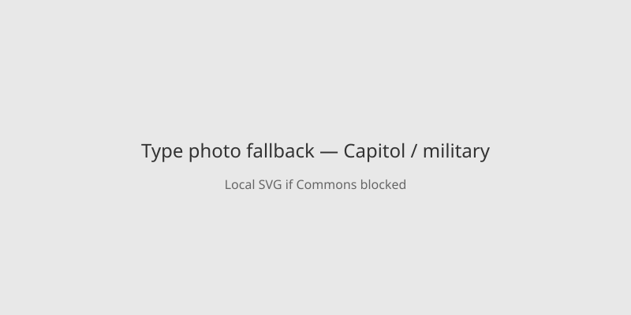

Texas · military justice · 15 October 2026
Trump said the December 3 firing-squad execution of Nidal Hasan will not be livestreamed.

What is agreed across desks
On 15 October President Trump posted that Nidal Hasan will be executed by firing squad on 3 December as scheduled at Fort Hood, but the event will not be streamed. The Pentagon had announced a livestream the previous week. Hasan, a former Army major and psychiatrist, was convicted of the 5 November 2009 shooting at Fort Hood that killed 13 people and wounded 32. This would be the first military execution in more than 60 years. Immediate families of victims may attend in person. Reuters, BBC and the New York Times report the same reversal and the same underlying conviction facts.
What is only a quote
Trump’s statement that a livestream “might have been a strong deterrent” is his opinion. His description of Hasan as “SCUM” is rhetorical. Claims about private deliberations or whether Trump knew Hasan is paralyzed are attributed to unnamed officials in some reports and are not independently verified here.
Mechanism a reader needs
Military capital cases proceed under the Uniform Code of Military Justice after a court-martial. Hasan’s conviction and death sentence have been upheld through the military appellate system. A firing squad is one of the methods available. Livestreaming a judicial execution has no recent U.S. precedent and drew criticism from both parties, religious leaders and some survivors. The decision not to stream leaves the in-person attendance rule for victims’ families unchanged. The photograph is a type view of the Capitol; it has no connection to the Texas installation or the 2009 events.
What this story is not
It is not a finding that the execution itself has been cancelled. It is not an assessment of deterrence research. It is not a portrait of Hasan or a photo of the 2009 scene.

Source articles and scores
| Outlet | Headline | T | N | C |
|---|---|---|---|---|
| Reuters | Trump shuts down Hegseth plan to livestream military execution | 97 | 0 | 100 |
| BBC | Trump calls off livestream of Fort Hood attacker’s execution by firing squad | 96 | 0 | 100 |
| New York Times | Trump Cancels Planned Livestream of Fort Hood Shooter’s Execution | 95 | 0 | 98 |
Hero: Commons type photograph of US Capitol west front. Special:FilePath. Caption states it is not Fort Hood or the event. onerror to local SVG. No crossorigin.